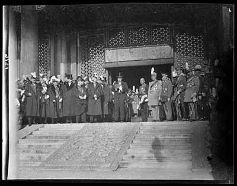
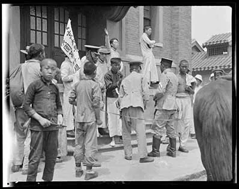
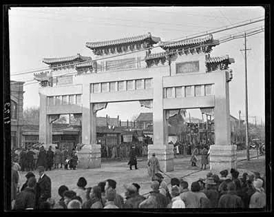

五四运动
巴黎和会上，中国作为战胜国却被出卖。1919 年 5 月 4 日下午二时，北京大学、北京高等师范以及工业、农业、医学、政法等十几所专科以上学校的 3000 余名学生，高呼"还我青岛""取消二十一条""外争主权，内除国贼"等口号， 冲破反动军警的阻挠，从四面八方汇聚到天安门前，举行抗议集会，并火烧签订二十一条时的外交次长、卖国贼曹汝霖的家——赵家楼。 一场震惊中外的反帝爱国运动在北京爆发了。

01 · 背景起因 Background
思想准备。1915 年新文化运动兴起，陈独秀创办《青年杂志》，高举民主与科学的旗帜， 猛烈批判旧礼教与旧文化；李大钊等人开始传播马克思主义。新文化运动为一场更激烈的社会运动准备了思想条件， 也培养了一批具有新思想、新观念的青年知识分子。
直接导火索。1919 年 1 月，第一次世界大战的战胜国在巴黎召开和会。中国作为战胜国之一， 在会上提出收回山东权益的正当要求，却遭到拒绝——会议决定将德国在山东的特权转让给日本。 "公理战胜强权"的期待落空，消息传回国内，举国震怒。
02 · 事件经过 Course of Events
03 · 主要人物 Figures
北京大学文科学长，新文化运动领袖，五四运动精神领袖。
北京大学图书馆主任，中国最早传播马克思主义者之一。
北京大学校长，支持学生爱国行动。
北京大学等校学生骨干，是这场运动的实际组织者与冲锋者。
04 · 历史图片与史料 Archive


史料文献 · 五四运动核心口号与主张
05 · 关键名词解释 Glossary
| 名词 | 解释 |
|---|---|
| 巴黎和会 | 1919 年 1 月第一次世界大战战胜国在巴黎召开的国际会议。中国作为战胜国提出收回山东权益的正当要求被拒，会议决定将德国在山东的特权转让给日本，成为五四运动的直接导火索。 |
| 二十一条 | 1915 年日本向袁世凯政府提出的侵略性要求，企图独占中国山东、东北南部及内蒙古东部等地的权益，严重损害中国主权。 |
| 外争主权，内除国贼 | 五四运动的核心口号。前者指向帝国主义列强对中国主权的侵犯，后者指向为日本效力、损害国家利益的亲日派官员，"外争"与"内除"并举，体现了彻底的反帝反封建性质。 |
| 赵家楼 | 曹汝霖在北京东城的住宅。1919 年 5 月 4 日，学生在游行受阻后转向此处，冲入宅内纵火，成为五四运动中影响最大的一幕。 |
| 旧民主主义革命 | 由资产阶级领导的、以建立资产阶级共和国为目标的反对帝国主义和封建主义的革命。1919 年五四运动之前，中国的民主革命属于这一范畴。 |
| 新民主主义革命 | 由无产阶级领导的、人民大众的、反对帝国主义、封建主义和官僚资本主义的革命。五四运动中工人阶级以独立姿态登上政治舞台，标志着这一革命的开端。 |
| 五四精神 | 以"爱国、进步、民主、科学"为核心内容的伟大精神，是五四运动留在中国历史进程中的精神遗产。 |
| 新文化运动 | 1915 年起兴起的思想启蒙运动，以陈独秀创办《青年杂志》为标志，高举民主与科学旗帜，批判旧礼教旧文化，为五四运动准备了思想条件。 |
| 三罢 | 指学生罢课、工人罢工、商人罢市。1919 年 6 月起在上海首先出现并席卷全国，是五四运动由学生运动发展为全民运动的标志。 |
| 拒签和约 | 1919 年 6 月 28 日，中国代表在巴黎和会上拒绝在对德和约上签字。这是五四运动取得的直接成果之一，也是近代中国外交上一次罕见的抗争。 |
06 · 意义与价值 Significance
五四运动，是中国由旧民主主义革命走向新民主主义革命的转折点。
一场以先进青年知识分子为先锋、广大人民群众参加的彻底反帝反封建的伟大爱国革命运动。
工人阶级以独立姿态登上政治舞台，马克思主义广泛传播，为中国共产党的诞生准备了思想和干部基础。
形成了以"爱国、进步、民主、科学"为核心内容的五四精神，成为近代以来追求民族独立与进步历程中的里程碑。